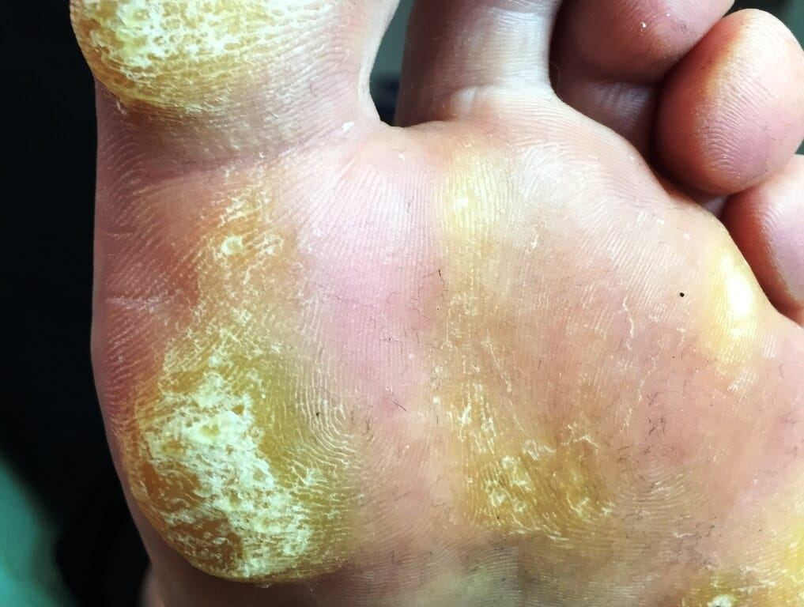
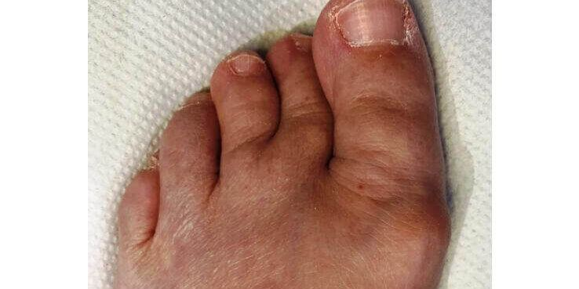
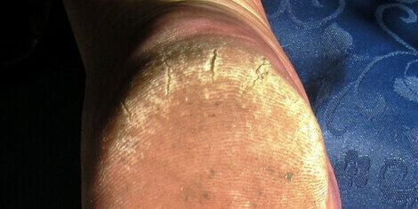
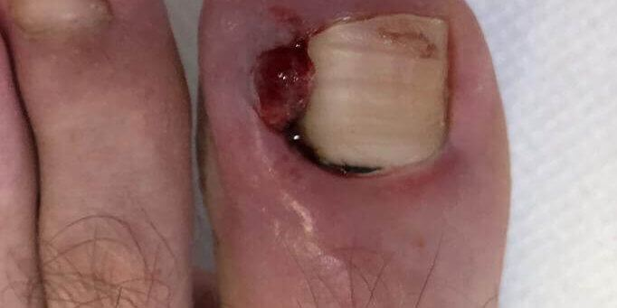

Your Foot Problems
How We Can Help
Hard Skin

Are you distressed by unsightly thickened skin on your feet? We love to see feet with corns and callous because they are easy for us to quickly and painlessly remove.
Joint Problems

Are you bothered by the shape of your foot? Is finding comfortable footwear a problem? We can bring comfort to your bunions and joint deformities and provide biomechanical assessments.
Nail Problems

Do your unsightly nails need a trim? Book online now for one of our simple toenail cutting appointments. For damaged nails or other problems see our advice on toenail problems.
Verrucae
Verrucae can be distressing even if they cause no pain. They can quickly spread if the skin is disturbed by rubbing or filing. Swift Microwave Therapy can help cure the problem.
Heel Pain

We know how distressing heel pain can be, limiting your daily life and causing misery. We love to help with all things heels - hard skin, cracked heels, plantar fasciitis and heel spurs.
Ingrowing Toe Nails

Ingrowing toenails can be very painful and need a gentle, sympathetic approach. They are caused by the nail breaking or being cut too short at one or both sides. See our toenail trouble advice.
Our Specialist Treatments
Swift Microwave Therapy
Pained by verrucae or troubled by warts? Swift Verruca Treatment could work for you.
Warm Wax Therapy
Suffering from Chilblains, Arthritis, Sports Injuries or Poor Circulation? We can ease your pain with heat therapy.
Toenail Reconstructions
Embarrassed by your toenails? Afraid to wear open toe sandals? We reconstruct toenails to look just like a normal nail.